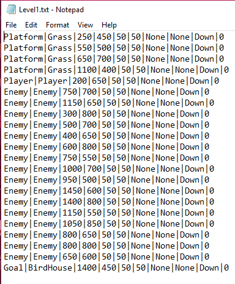
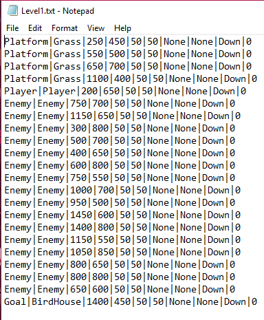

Tweety no like Squirrels
Class group project
This game was a semester-long group project that was built with Monogame. It's a 2D platformer where the player plays as a bird who is trying to get home, and avoid squirrels. For this project, I suggested the initial game concept and created the art assets, and was the primary developer of the level editor tool.
The level editor works by looking at how the tiles have been filled in by the user when they user saves the level. Based on this, it fills in a text file with information about each tile, which the game then parses when it loads a level. This project was difficult because when I started it, I had very little idea of how to go about making the editor portion itself. The solution that I came up with, while it worked, was clunky, slow, and extremely buggy. After discussing this with some classmates, they suggested alternative methods of implementing a level editor, which were much more reliable and faster.
However, while I am still proud of the effort I put in to this project, it was still very rough. By this point in time every time I look back on it I see improvements that can be made, and I can't help but be excited for my next opportunity build a level editor for a game, just to have another shot at it.
 
